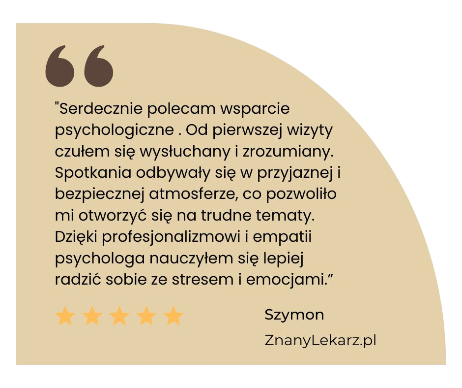
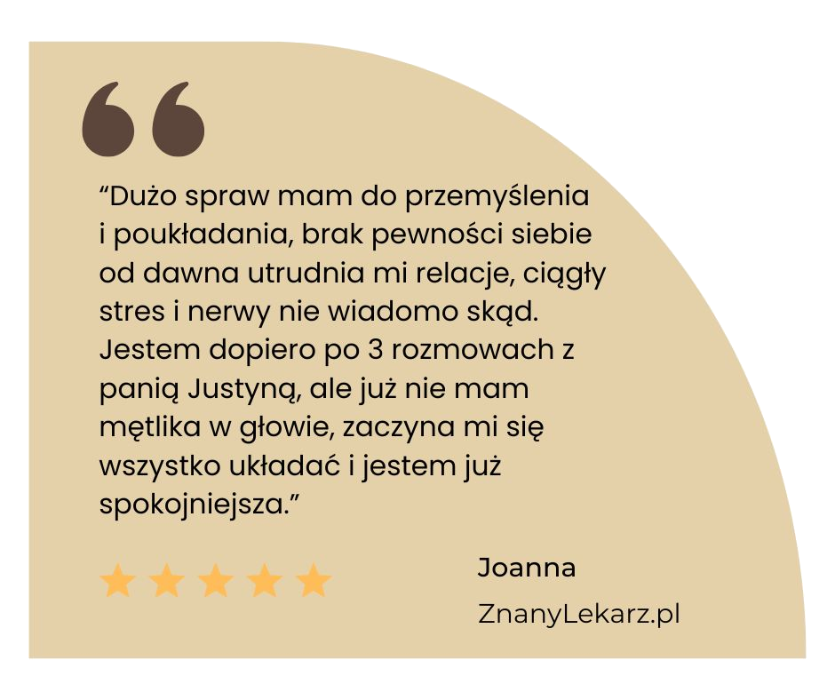
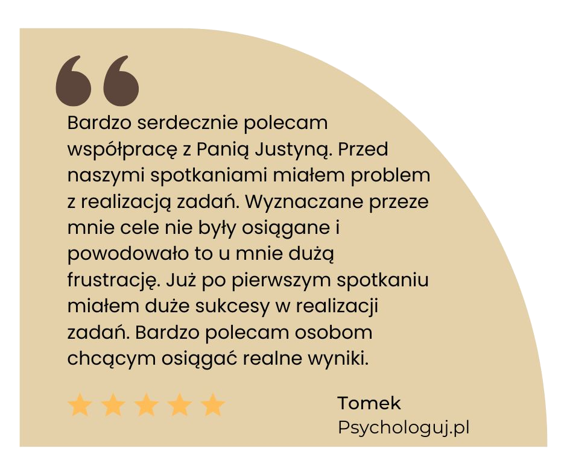

- Psycholog | Coach | Terapeuta
Jestem psychologiem, dyplomowanym coachem oraz terapeutką, pracującą w nurcie poznawczo-behawioralnym (CBT). W mojej pracy z Klientem najważniejsza jest empatia, relacja i efekty. Wsłuchuję się w oczekiwania dobierając metody pracy terapeutycznej lub coaching'owej do indywidualnych potrzeb i rodzaju problemów, które pomagam Klientowi pokonać.
Istotne jest dla mnie, aby Klient w możliwie najkrótszym czasie odczuł poprawę swojej sytuacji oraz wzrost satysfakcji ze swojego życia i relacji.
Ukończyłam psychologię na Uniwersytecie Warszawskim, akademicki kurs coachingu na Uniwersytecie SWPS, obecnie jestem w trakcie 4-letniego całościowego szkolenia psychoterapeutycznego w Szkole Psychoterapii Poznawczo-Behawioralnej WSB-NLU.
Mam doświadczenie menedżerskie w pracy w HR, PR oraz sprzedaży, które wykorzystuję w coachingu kariery i menedżerskim, a także coachingu wizerunkowym.
mgr Justyna Siwek
Psycholog · Coach · Terapeuta CBT
Jeśli czujesz, że nie dogadujesz się z innymi, nie potrafisz mówić otwarcie o swoich opiniach i uczuciach, a wszyscy wchodzą Ci na głowę – mogę pomóc rozwiązywać problemy w relacjach:
Jeśli Twoje życie Cię nie zadowala w pełni, emocje Cię przytłaczają, masz dużo obaw i trudności w podejmowaniu decyzji, albo dużo stresu i czujesz że nie dajesz rady – pomogę:
#coaching kariery #executive coaching #coaching menedżerski
Jeśli Twoja obecna sytuacja zawodowa jest źródłem Twojego stresu, czujesz wypalenie zawodowe, albo masz trudności w znalezieniu nowej, satysfakcjonującej pracy – mogę pomóc:
Jeśli jesteś menedżerem, zarządzasz ludźmi lub projektami, ale nie przychodzi Ci to łatwo. Ciągle nie masz czasu, stresujesz się, ale nie wiesz jak to zmienić, odnosisz wrażenie, że pracownicy nie rozumieją Twojego punktu widzenia, a Twoja skuteczność jest niższa niż oczekujesz – możemy wspólnie przyjrzeć się, jak to zmienić:
Czujesz, że masz problem, z którym sobie nie możesz już poradzić, Twoje życie przez to nie jest w pełni satysfakcjonujące, cierpisz Ty, może także Twoi bliscy. To może być sytuacja dla Ciebie nowa, jak śmierć bliskiej osoby, czy jej poważna choroba, albo problemy, które ciągną się od lat. Utrudniają one codzienne funkcjonowanie, wpływają na pracę, naukę, rodzinę i relacje z innymi. Mogę Ci skutecznie pomóc:
Zapraszam do bezpłatnej konsultacji telefonicznej (ok. 20 min), podczas której możemy omówić możliwości i formę współpracy.
Sesje coachingowe oraz psychologiczne odbywają się online lub stacjonarnie w Warszawie i trwają 50 min.
Umawianie spotkań jest możliwe poprzez kalendarz na portalu ZnanyLekarz.pl lub telefonicznie.
Po umówieniu spotkania Klient otrzyma link do spotkania w Google Meet. Udział w spotkaniu nie wymaga instalacji oprogramowania na komputerze lub smartfonie.
Spotkania stacjonarne odbywają się w piątki w Warszawie przy ul. Józefa Hoene-Wrońskiego 15/7.
Konsultacje psychologiczne, terapia psychologiczna oraz coaching – 180 zł.
Coaching menedżerski – 200 zł.
Skorzystaj z wygodnego kalendarza online na portalu ZnanyLekarz lub zadzwoń.
Umów wizytę online Zadzwoń: 883 956 256

